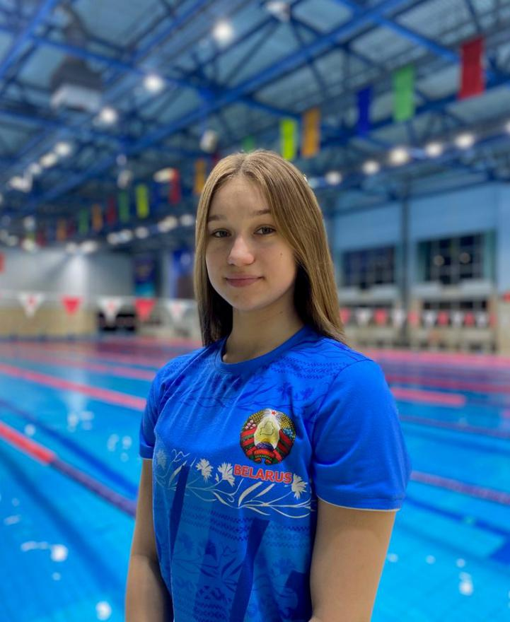

Плавание (брасс)
Ангелина Малащенко (род. 2004, Жлобин) — белорусская пловчиха, специалист по брассу, воспитанница жлобинского Центра олимпийского резерва. Чемпионка Беларуси 2021 года на дистанции 200 м брассом, участница юниорского чемпионата Европы, рекордсменка страны среди юниоров.
Ангелина родилась в 2004 году. Её первый наставник — Оксана Турасова, нынешний тренер — Виталий Круглов. Вся её карьера построена вокруг брасса — она выступает на дистанциях 50, 100 и 200 метров.
Спортивная карьера: 2021, Брест — на открытом чемпионате Беларуси стала чемпионкой страны на 200 м брассом, выиграла серебро на 50 м и бронзу на 100 м, установив два юношеских рекорда. Лето 2021, Рим — на юниорском чемпионате Европы установила рекорд Беларуси среди юниоров. 2022, декабрь — «хет-трик» в Бресте: золото на всех трёх брассовых дистанциях. 2024 — три золота на республиканской универсиаде. 2025 — серебряные медали чемпионата Беларуси на 50 и 100 м брассом, бронза на 200 м.
Личные рекорды: 50 м брасс — 31,66, 100 м — 1:09,92, 200 м — 2:32,15 в 50-метровом бассейне. Параллельно со спортом Ангелина учится в Гомельском государственном университете имени Франциска Скорины на факультете физической культуры. Её цель на будущее — тренерская работа на родине.